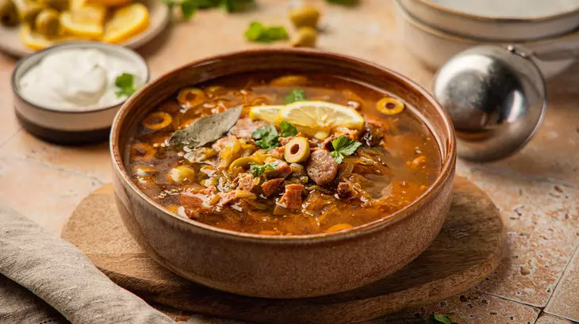

Перейти вниз
Классическая солянка
Рецепт традиционного русского супа

Фото: ВкусВилл.ру
Солянка - это наваристый суп с богатым вкусом, который готовят на основе мясного, рыбного или грибного бульона с добавлением солёных огурцов, маслин, каперсов и томатной пасты.
Ингредиенты
- 500 г говядины
- 2 л воды
- 3 соленых огурца
- 2 столовые ложки томатной пасты
- 100 г копченостей (колбасы, ветчины)
- 50 г маслин
- 1 луковица
- 2 столовые ложки растительного масла
- Сметана и лимон для подачи
Способ приготовления
- Берем ребра.
- Заливаются 3 литрами воды.
- Натереть соленые огурчики.
- Обжарить лук.
- Добавьте огурцы и томатную пасту, перемешайте и жарьте ещё 7-10 минут на среднем огне.
- Из бульона выньте рёбра. Срежьте мясо с костей, нарежьте его мелко и верните в бульон.
- Добавьте в бульон зажарку и лавровый лист.
- Нарежьте мелко колбасу и добавьте в суп.
- В конце добавьте оливки, поперчите, доведите до кипения и выключите огонь.
Таблица калорийности
| Ингредиент |
Калории (на 100 г) |
| Говядина |
250 ккал |
| Соленые огурцы |
15 ккал |
| Копчености |
300 ккал |
| Маслины |
115 ккал |
| Лук |
40 ккал |
Полезные ссылки
Оригинальный рецепт на ВкусВилл
Поиск рецептов в Google
Перейти вверх